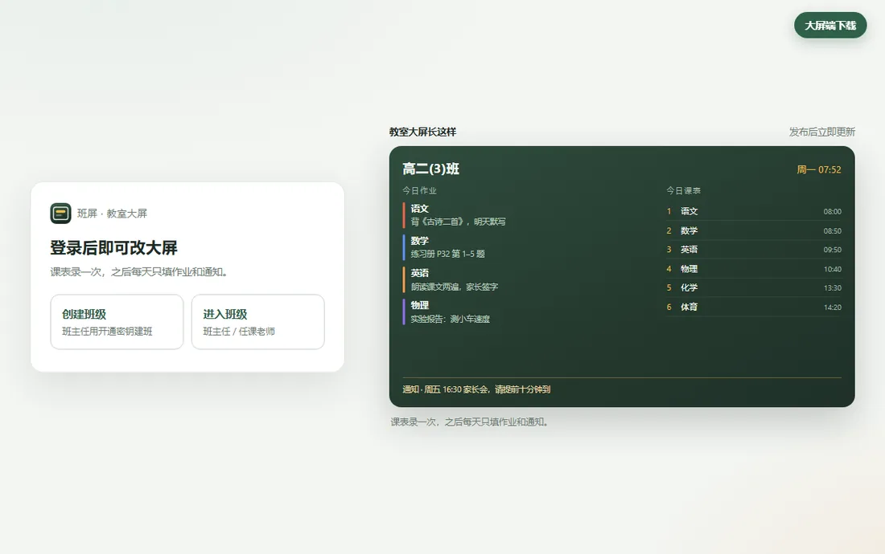
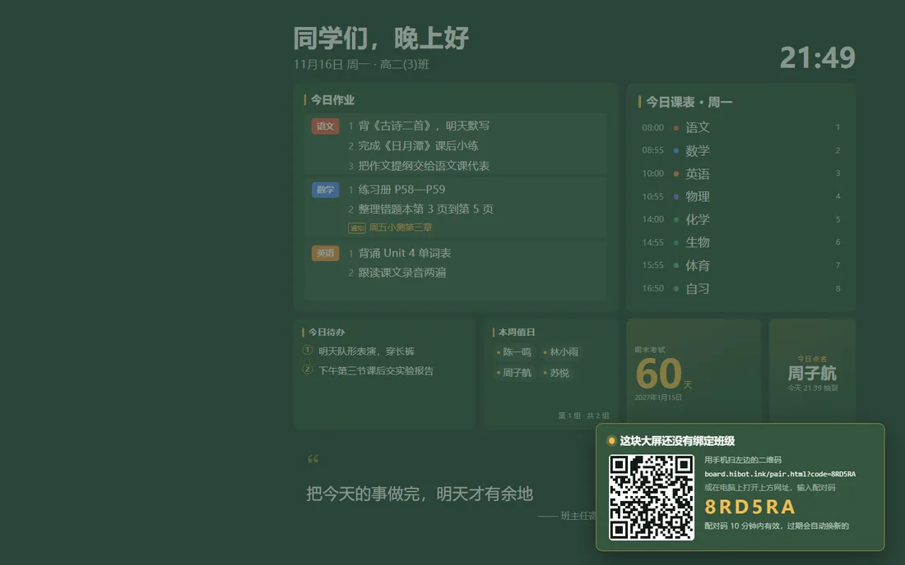
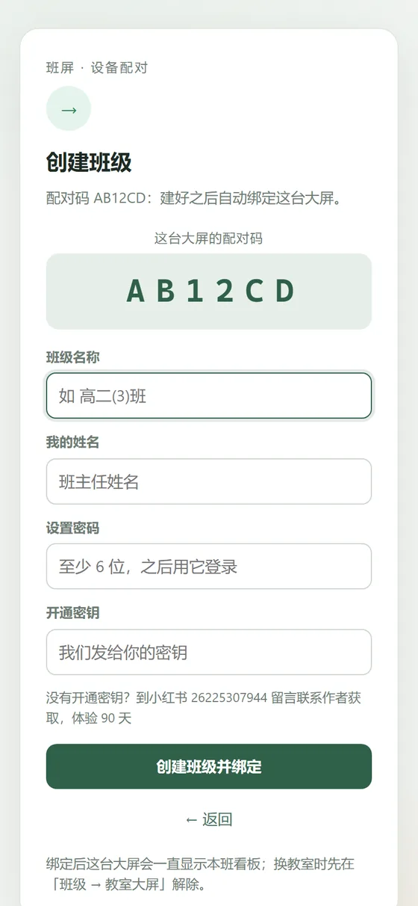
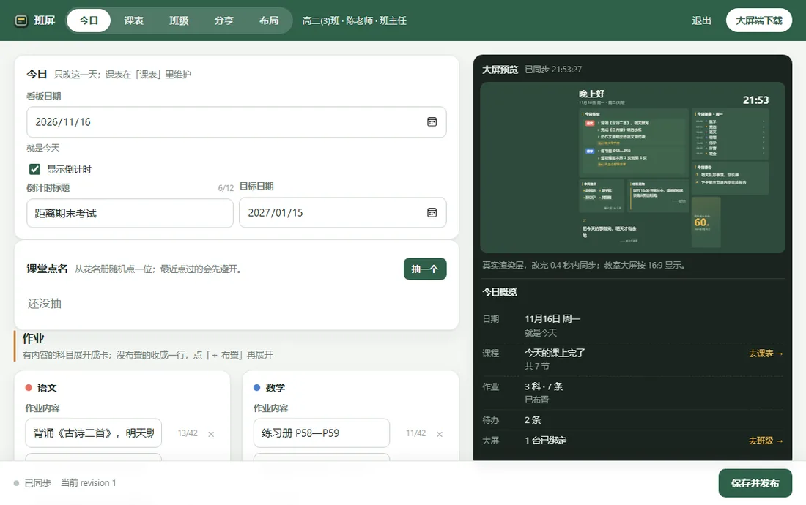

1
大屏打开网址
在教室那台电脑的浏览器里打开这个网址，右上角能看到「大屏端下载」。

班屏 · 教室大屏
课表录一次，之后每天只填作业和通知。
1
在教室那台电脑的浏览器里打开这个网址，右上角能看到「大屏端下载」。

2
点这个按钮下载安装包，双击装完，从桌面或开始菜单启动「班屏」——它常驻托盘，把桌面壁纸层接过来当大屏。
3
还没绑定班级时，大屏右下角会浮出配对卡：手机扫码，或者在大屏上敲那 6 位配对码。

4
手机页面里还没有班级，就点「创建班级」：填班级名称、你的名字、登录密码和开通密钥，建好就自动绑定这块大屏。

5
之后在老师端录课表、作业和通知，点「保存并发布」，大屏几秒内就同步。
